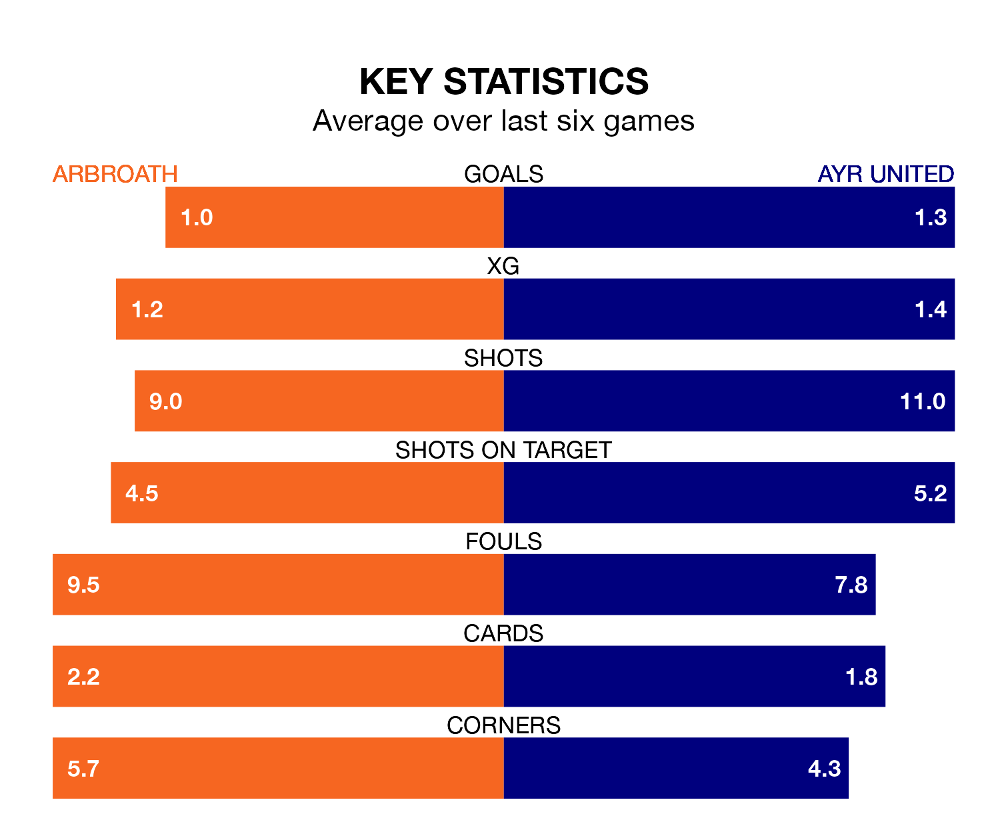

Saturday's match at Gayfield Park sees two relegation candidates play each other, as bottom of the table Arbroath host eighth-placed Ayr United.
Arbroath have picked up 17 points from their first 17 Scottish Championship games, with five wins and two draws.
That is two points less than the Honest Men have collected, having won five and drawn four.
With 23 goals in 19 games so far this season, Arbroath are scoring at below the league average rate with 1.2 goals per game. And they are conceding more than average, letting in 40 goals at a rate of 2.1 per game.
Ayr are also below average scorers, with 1.3 goals per game, compared to a league average of 1.4. They have conceded 2.0 goals per game.
In the last 10 years, Arbroath and Ayr have played each other on 20 occasions. Arbroath won eight of them, Ayr six, and they drew six times.
On average, Arbroath scored 1.4 goals and the Honest Men 1.3 in those matches.
Their last meeting was on September 2, when Arbroath won 2-1 at home.
The hosts are in disappointing form in Scottish Championship, with one win and two draws from their last six games.
And also with a win and two draws over that period, United's form is identical – they have both taken five points from 18.
In Jermaine Hylton, Arbroath have one of the league's most on-form strikers so far this season. He has notched six goals in 17 appearances, to sit seventh in the scoring charts.
His goal rate of one every 201 minutes is quicker than that of Jamie Murphy, the Honest Men's top scorer with a goal every 287 minutes, and a total of four goals in 15 games.
Arbroath's last match was on January 6, a 4-0 loss against Partick Thistle.
Ayr lost 3-1 against Inverness CT last time out, also on January 6, with Logan Chalmers on the scoresheet.
Updated: 15:34, 08/01/24